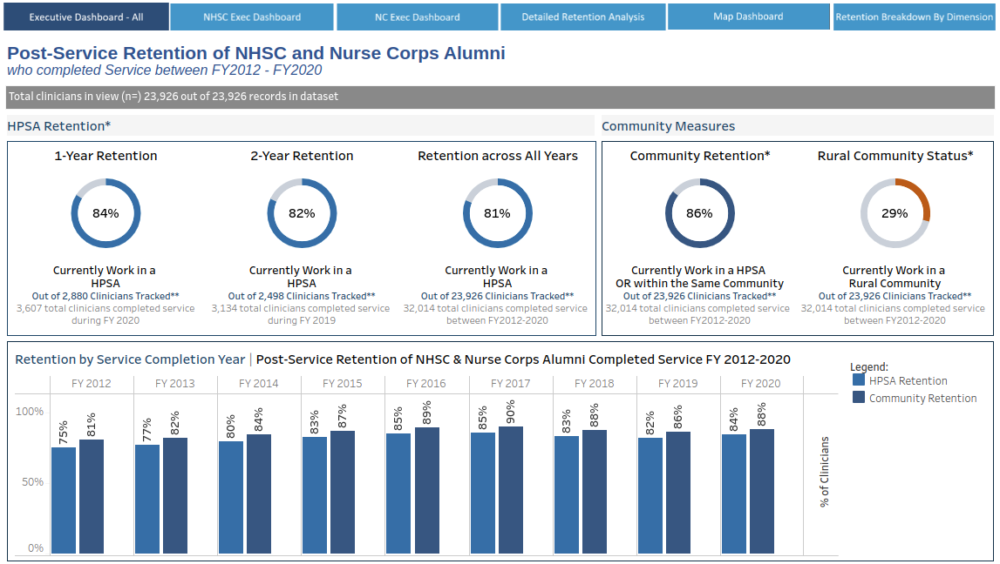

HRSA has a primary mission of providing financial incentives to
doctors and nurses in return for their service in healthcare shortage areas.
Working with senior level staff and executives at HRSA, we developed the data governance requirements for an algorithm
that measures the level of "community retention" in clinicians funded agency programs. The algorithm assigns a score
based on where they performed service and where they currently worked. This was superior to past survey approaches to measure
retention and is used for the agency's congressional budget justification.
The pipeline starts with a data warehouse and ends with Tableau dashboards for both internal
and external use.
This dataset was also able to be used in a supervised machine learning experiment to predict a clinician's retention score
using Random Forest and XGBoost algorithms that were trained and evaluated, then analyzed using SHAP (SHapely Additive exPlanations)
to understand why the model was making those predictions and bring that insight to the applicable programs.
Community Needs Assessment Platform
This project (still under development) involves the buildout of a process to:
- Identify a use case - a specific area of public health such as primary care or mental health
- Assess the data landscape and ingest and explore different gold-standard data sources
- Review research studies and academic literature to establish a theoretical factor structure
- Perform exploratory factor analysis to evaluate data relationships across latent factors
- Perform cluster analysis on the final data groups to establish a score for the use case
COVID-19 Vulnerability Modeling
As the COVID-19 pandemic began, we developed an unsupervised machine learning model to
assess the vulnerability of counties across the US to the virus. This rapid response effort involved
taking CDC guidance on vulnerable populations, sourcing and ingesting datasets that described these populations,
and performing clustering to develop a score for the vulnerability for each county. The pipeline was automated
using Jenkins and ran on a nightly basis, serving data to an ArcGIS-powered front end mapping UI that provided
the vulnerability layer along with other key agency data.
Healthcare Shortage Analytics Pipeline
This tool, also known internally as the "Scoring Simulator", gives HRSA the ability to evaluate the impact of
different policy choices on the health professional shortage designation process. The pipeline involves acquiring
external and internal data, performing aggregations and GIS analyses, and generating designation shortage scores with
flexible inputs for rapid iteration of policy choices. The pipeline was built for expansion and optimization capability
as agency needs evolve.
Automated Data Integrity Testing
This work involved the development of scripts using Python to validate data processes. Prior to this, data testing was
typically done by developing test plans to cover as many edge cases as possible, and spot testing within each cases
to look for defects. Using this approach, python scripts were instead written, primarily using Pandas and NumPy in
Jupyter notebooks, to implement the same business requirements that the source-to-target transformations were designed
for. This allowed us to automate data integrity testing, evaluating every all records passed through the production
process as opposed to spot checking, and allowed QA spend more time testing other aspects of the software development processes.
Provider Location Update Manager (prototype)
The accuracy of provider location data is key to this client's data capabilities. This project involved the brainstorming of
ways to improve provider location data accuracy, and the building of a prototype that would scrape publicly available location
data and, using internal provider location data with known accuracy level, predict the accuracy of all internal data with
unknown accuracy level. The modeling process involved taking the labeled dataset of "accurate" and "not accurate" provider locations,
scraping public data for these providers, and assessing a match level for each location. This was used to predict accuracy on a holdout
set, and a prototype was developed at a small scale. This project has not yet been funded as it requires access to cloud services
for scalability.